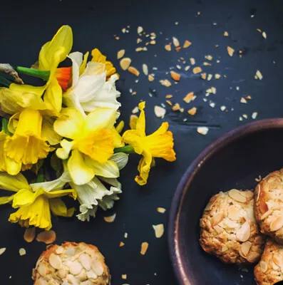

Is caffeine good for your health?
Dec 7, 2017

Caffeine consumption is generally considered safe, although habit forming. Some side effects linked to excess intake include anxiety, restlessness, tremors, irregular heartbeat, and trouble sleeping. Too much caffeine may also promote headaches, migraine, and high blood pressure in some individuals
What are no sugar oatmeal cookies?
Dec 7, 2017

Low in sugar, these oatmeal cookies are naturally sweet from applesauce, bananas, and raisins — they're sure to satisfy a sweet tooth! They're also made without flour and lactose.